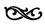
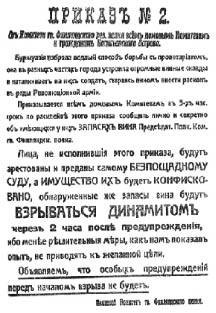

BÖLÜM VIII

KARŞIDEVRİM


Ertesi sabah, 11 Kasım Pazar günü, Kazaklar Çarskoye Selo’ya girdiler. Kerenski askerlerin başında, beyaz bir ata binmiş (1), bütün kiliselerin çanları durmadan çalıyor... Şehrin dışındaki küçük bir tepeden, şehrin yaldızlı kuleleri, renkli kubbeleri ve donuk ova boyunca taa Finlandiya körfezine kadar uzayıp giden koskoca ve yaygın başkent görülebiliyor.
Savaş olmamıştı, ama Kerenski büyük bir yanlışlık yapmıştı: Sabahın saat yedisinde İkinci Çarskoye Selo piyadesine haber yollayarak silahlarını bırakmalarını istemiş. Askerler tarafsız kalacaklarını, ancak silahlarını da teslim etmeyeceklerini bildirmişler. Kerenski on dakika içinde teslim olmalarını istemiş. Bu ihtar askerleri kızdırmış; çünkü sekiz aydan beri askerler kendilerini kendi komiteleriyle yönetiyorlardı. Bu emir onlara eski rejimi hatırlatmış... Birkaç dakika sonra Kazak topçuları kışlalara ateş açmaya başlamışlar, sekiz kişi ölmüş. O dakikadan sonra Çarskoye’de “tarafsız” asker kalmamış.
Petrograd o sabah silah sesleriyle ve yürüyen asker ayaklarının çıkardığı gürültülerle uyandı. Karanlık havada esen soğuk rüzgâr, kar getireceğe benziyordu. Gün ağarırken çok sayıda yunker kuvvetleri Askerî Oteli ve Telgraf Ajansı’nı ele geçirdi. Sonradan buraları, kanlı bir savaşla yeniden ellerinden alındı. Telefon santralini bahriyeliler çevirmişlerdi. Morskaya’nın ortasında fıçılar, sandıklar ve teneke parçalarından yapılma barikatların arkasında yere yatmışlar, ya da Gorohovaya’nın, St. Isaac meydanının köşesine sığınmışlardı. Kımıldayan her şeye ateş ediyorlardı. Bu sırada Kızıl Haç bayrağı taşıyan bir otomobil gelip geçti. Bahriyeliler otomobile ateş etmediler...
Albert Rhys Williams telefon santralindeydi. Yaralı taşıyan Kızıl Haç otomobiline binerek sokağa çıktı. Otomobil şehirde bir süre dolaştıktan sonra, karışık yollardan geçerek Mihailovski yunker okuluna geldi. Okul karşıdevrimin karargâhıydı. Avludaki bir Fransız subayı, komutan durumunda gibiydi... Telefon santraline bu yoldan cephane ve silah gönderildi. Bu çeşitten birçok sahte cankurtaran yunker’lerin haberciliğini ve cephane taşıma görevini yapıyordu.
Silahları alınan İngiliz Zırhlı Taşıt Tümeni’ne ait beş altı zırhlı otomobil ellerinde bulunuyordu. Louise Bryant, St. İsaac meydanından geçerken, bunlardan biri Donanma Dairesi’nden çıkmış, telefon santraline doğru gidiyordu. Gogolia caddesinin köşesinde, tam kızın önünde motoru stop etti. Tahta sandıkların arkasına gizlenmiş olan bazı bahriyeliler ateş etmeye başladılar. Mazgaldaki makineli tüfek döndü, tahta yığınlarına ve kalabalığa doğru gelişi güzel ateşe koyuldu. Bayan Bryant’ın bulunduğu kemerli yolda birçok insan vurulup öldü. Aralarında iki küçük çocuk da vardı. Birdenbire bir bağrışma oldu, bahriyeliler fırladılar ve ateş eden otomobile doğru koşmaya başladılar. Devin çevresini sardılar, bağıra bağıra süngülerini mazgallardan içeri sokup çıkarmaya başladılar. Şoför yaralanmış gibi yaptı, onu bıraktılar... O elbette koşup gidecek, Bolşeviklerin yaptıkları zulümleri anlatacaktı... Ölüler arasında bir de İngiliz subayı vardı.
Az sonra gazeteler bir yunker otomobilinde yakalanan başka bir Fransız subayının Peter-Paul hapishanesine gönderildiğini yazıyordu. Fransız Elçiliği bunu hemen inkar etti, ama subayın, bizzat kendisi tarafından hapisten kurtarıldığını Belediye Meclisi üyelerinden biri söyledi bana...
Müttefik elçiliklerinin resmî tutumu ne olursa olsun, Fransız ve İngiliz subayları o günlerde, teker teker, oldukça faaldiler; hatta Kurtuluş Komitesi’nin Yürütme Komitesi toplantılarına danışmanlık yapacak kadar da ileri gidiyorlardı.
Şehrin her mahallesinde yunker’lerle Kızıl Muhafızlar arasında bütün gün çarpışmalar oldu. Zırhlı otomobiller arasında savaşlar yapıldı. Yaylım ateşler, tek tek silah sesleri ve makineli tüfek takırtıları, uzaktan yakından işitildi durdu. Dükkânların kepenkleri indirilmişti ama hepsinin içinde alışveriş yine devam ediyordu. Dış elektrikleri söndürülmüş olan sinemalarda bile oldukça kalabalıktı. Tramvaylar işliyordu. Telefonların hepsi de işliyordu; santrali açtığımız zaman insanın kulağına silah sesleri geliyordu... Smolni ile irtibat kesilmişti, ama Duma ile Kurtuluş Komitesi bütün yunker okullarıyla ve Çarskoye’de bulunan Kerenski’yle sürekli olarak konuşabiliyordu.
Sabahın saat yedisinde Vladimir yunker okuluna asker, bahriyeli ve Kızıl Muhafızlardan oluşan bir devriye gitmiş. Yunker’lere silahlarını bırakmaları için yirmi dakika müsaade vermişler. Ültimatom reddedilmiş. Bir saat sonra yunker’ler binadan çıkmak istemişler, fakat Grebetskaya ve Bolşoy Prospekt köşesinden açılan bir yaylım ateşle geri püskürtülmüşler.
Sovyet askerleri binayı sarmışlar ve ateş açmışlar. İki zırhlı otomobil, makineli tüfekle binayı tarayarak gidip gelmiş. Yunker’ler telefon edip yardım istemişler. Kazaklar gelmeye cesaret edemediklerini, çünkü elinde iki top bulunan büyük bir bahriyeli birliğinin, bulundukları kışlayı ateş altında tuttuğunu bildirmişler. Pavlovsk okulu da çevrilmiş. Mihailov yunker’lerinin çoğu sokaklarda çarpışıyorlardı...
Saat yedi buçukta üç sahra topu daha getirildi, Yunker’ler kendilerine yapılan yeni bir teslim teklifine, ellerinde beyaz bayrak tutan iki sovyet delegesine ateş açarak cevap verdiler. İşte o zaman gerçek bir bombardıman başladı. Okulun duvarlarında büyük büyük delikler açıldı. Yunker’ler kendilerini umutsuzca savunuyorlardı; bağırarak hücuma kalkan Kızıl Muhafızlar gücünü gittikçe yitiren savunma ateşinin karşısında durmadan eriyordu... Kerenski Askerî Devrimci Komite ile ne olursa olsun konuşmamalarını telefonla emretmişti...
Yenilgilerine ve yerde yığın yığın yatan ölülerine bakıp kızan sovyet askerleri, zaten harap olmuş binaya karşı son bir ölüm kalım savaşı açtılar. Kendi subayları bile, bu korkunç bombardımanı durduramıyordu. Kirilov adında Smolni’den gönderilmiş bir komiser onları durdurmaya çalıştı; az kalsın linç ediliyordu. Kızıl Muhafızlar iyice kızmışlardı,
Saat iki buçukta yunker’ler beyaz bayrak çektiler; eğer kendilerine bir şey yapılmayacağı garanti edilirse teslim olacaklardı. Söz verildi. Binlerce asker ve Kızıl Muhafız birden bağıra bağıra pencerelerden ve duvarlarda açılmış olan deliklerden içeri daldı. Daha dur demeye vakit kalmadan beş yunker süngülenerek öldürüldü. Geriye kalan iki yüz kadarı, dikkati çekmemek için, küçük gruplar halinde ve muhafaza altında Peter-Paul hapishanesine götürüldü. Yolda bir kalabalık, kafilenin üstüne saldırdı, sekizden fazla yunker öldürüldü... Çatışmada yüzden çok Kızıl Muhafız ve asker ölmüştü...
İki saat sonra Duma bir mesaj aldı. Mesajda galiplerin İnjiniyerni Zamok’a (Mühendis Okulu) yürüdükleri bildiriliyordu. Birçok üye Kurtuluş Komitesi’nin en son bildirilerini bunlara dağıtmak üzere ellerinde paketlerle dışarı çıktılar. Birkaçı bir daha dönmedi... Bütün öteki okullar da direnmeden teslim oldular ve yunker’ler sağlam olarak Peter-Paul hapishanesine ve Kronştad’a gönderildiler.
Telefon santrali ikindiye kadar dayandı. Sonra bir Bolşevik zırhlı otomobil geldi ve bahriyeliler santrali hücumla ele geçirdiler... Korkudan bağırıp çağıran telefoncu kızlar oraya buraya kaçışıyorlardı; yunker’ler omuzlarındaki rütbe işaretlerini yırtıyorlardı. İçlerinden biri Williams’a paltosunu ödünç verirse her istediğini yapacağını söylüyordu... “Bizi öldürecekler! Bizi öldürecekler!” diye bağırıyorlardı; çünkü birçoğu Kışlık Saray’da halka karşı bir daha silah kullanmayacağına söz vermişti. Williams, Antonov’u serbest bırakırlarsa aralarını bulmaya çalışacağını söyledi. Buna hemen razı oldular. Antonov ile Williams ölmüş arkadaşlarına bakıp kızan bahriyelilere birer söylev verdiler... Yunker’ler bir kere daha serbest bırakıldılar... Çoğu paniğe kapılarak dama kaçtı ya da tavan arasında saklandı, sonunda hepsi de toplanarak sokağa indirildi.
Yorulmuş ve kana bulanmış ve sonunda kazanmış olan bahriyelilerle işçiler santral salonuna daldılar. Orada birçok güzel kız görünce şaşırdılar ve ne yapacaklarını bilemediler. Hiçbir kızın bir yanına bir şey olmadı, hiçbir kıza hakaret edilmedi. Ama kızlar korkarak köşelere kaçtılar. Kendilerine bir şey yapılmadığını görünce içlerindekini dışarıya vurmaya başladılar: “Öf! Pis Cahiller! Aptallar!...” Bahriyelilerle Kızıl Muhafızlar şaşırmışlardı. Kızlar bir yandan mantolarını ve şapkalarını giyerken bir yandan da, “Kaba herifler! Domuzlar!” diye bağırıyorlardı. Çokluk soylu ailelerin çocukları olan yunker’lere mermi taşımak ve yaralarını sarmak onlara daha romantik gelmişti! Bunlarsa kaba işçiler ve köylülerdi, “adi halk”tı...
Askerî Devrimci Komite komiseri ufak tefek Vişniyak, kızları yerlerine oturtmaya çalıştı. Çok kibar davranıyordu. “Bugüne kadar sizin hakkınızı yediler,” dedi. “Telefon İdaresi Belediye Duması’nın elindeydi: Ayda size altmış ruble veriliyor, günde on saat, bazen on saatten de çok çalıştırılıyorsunuz... Bundan sonra durum değişecek. Hükümet telefonları Posta ve Telgraf Bakanlığı’na bağlamak istiyor. Maaşlarınız birdenbire yüz elli rubleye yükselecek ve çalışma saatleriniz azaltılacak. İşçi sınıfının birer üyesi olarak mutlu günler göreceksiniz...”
İşçi sınıfı ha! Yani bu…, bu hayvanlarla..., bizim aramızda..., benzerlik mi var demek istiyor? Çalışmak mı? Bin ruble verseler çalışmayız! Kızlar kabara kabara ve tiksintiyle salondan çıkıp gittiler...
Binadaki öteki memurlar, hat bakıcıları ve işçiler orda kaldılar ama santralin çalıştırılması gerekti. Telefon, çok önemliydi. Yalnız beş altı yetişmiş operatör vardı. Gönüllü olarak çalışmak isteyenler arandı: yüz kadar bahriyeli, asker ve işçi çıktı. Altı kız oraya buraya koşarak, ileri geri giderek, bağırarak ve azarlayarak santralin çalışmasını öğretti onlara... Böylece ara sıra kesintiler olsa bile tellerden yine ses çıkmaya başladı. İlk iş Smolni ile kışlaları ve fabrikaları bağlamak, ikincisi Duma ile yunker okullarının hatlarını kesmek oldu... Akşama doğru durum bütün şehirde duyuldu ve yüzlerce burjuva bağırmaya başladı: “Aptallar! Serseriler! Bu daha ne kadar sürer sanıyorsunuz? Kazaklar gelsin de anlarsınız!”
Karanlık basmak üzereydi. Hemen hemen kimsenin bulunmadığı Nevski’de soğuk, acı bir rüzgâr esiyordu. Yalnız Kazan Katedrali’nin önünde bir kalabalık toplanmış, durmadan aralarında konuşuyorlar. Birkaç işçi, birkaç asker; ötekiler de dükkân sahipleri, memurlar ve benzerleri...
İçlerinden biri, “Ama Lenin Almanya’yı barışa razı edemeyecek!” diye bağırdı.
Sert bakışlı genç bir asker cevap verdi: “Peki, bu kimin suçu? Kerenski’nin! Pis burjuva! Kahrolsun Kerenski! Biz istemiyoruz onu. Biz Lenin’i istiyoruz...”
Duma’nın dışında, kolunda beyaz bant bulunan bir subay, yüksek sesle küfrede ede, duvardaki kâğıtları yırtıyor. Kâğıtlardan birinde şunlar yazılı:
Petrograd Halkına!
Şehir Duması’nın halkı teskin etmek, halkın ekmek ve öteki ihtiyaçlarını sağlamak üzere her çareye başvurduğu bu tehlikeli saatte Sağ Sosyalist Devrimcilerle Kadetler, kendi görevlerini unutarak, Duma’yı devrim düşmanlarının toplantı yeri haline getirmeye, halkı birbirine düşürmeye, böylece Kornilov-Kerenski zaferini kolaylaştırmaya çalışmaktadırlar. Sağ Sosyalist Devrimciler ve Kadetler görevlerini yapacakları yerde Duma’yı İşçi, Asker ve Köylü Sovyetleri’ne, devrimci barış, ekmek ve özgürlük hükümetine karşı siyasi bir saldırı meydanı yapmışlardır.
Petrograd yurttaşları, sizler tarafından seçilmiş Bolşevik Belediye üyeleri olan bizler... şunu bilmenizi istiyoruz ki, karşıdevrim faaliyetiyle uğraşmakta olan Sağ Sosyalist Devrimciler görevlerini unutmuşlardır, halkı kıtlığa ve iç savaşa sürüklemektedirler. 183.000 oyla seçilmiş olan bizler Duma’da olup bitenleri seçmenlerimizin dikkatine sunmayı bir görev sayar ve bu durumdan zorunlulukla doğacak olan korkunç sonuçların sorumluluğunu kabul etmediğimizi açıklarız...
Uzaktan hâlâ silah sesleri geliyor, ama şehir korkunç bir spazm geçirmiş gibi durgun ve soğuk....
Duma’nın Nikolay salonundaki toplantısı sona eriyordu. Sinirli Duma bile biraz gevşemiş gibiydi. Komiserler birbiri ardına telefon santralinin ele geçirilişini, sokak kavgalarını, Vladimir Okulunun alınışını anlatıyorlardı... Trup, “Duma,” dedi, “keyfi şekilde kullanılan zor kuvveti ile yaptığı savaşta demokrasiden yanadır; ama, hangi taraf kazanırsa kazansın, Duma her zaman için linç ve işkenceye karşı olacaktır...”
Uzun boylu, nemrut yüzlü bir Kadet olan Knovski de şunları söyledi: “Meşru hükümetin askerleri Petrograd’a girdikleri zaman, bu asileri öldüreceklerdir ve bu da linç sayılmayacaktır!” Bu söz salonda protestolarla karşılandı. Kendi partisi bile protesto etti...
Bir kuşku ve çöküntü havası vardı, karşıdevrim bastırılıyordu, Sosyalist Devrimci Partinin Merkez Komitesi kendi subaylarına güvensizliğini belirtmişti; sol kanat denetimi ele geçirmişti; Avksentiyev çekilmişti. Bir kurye Kerenski’yi tren istasyonunda karşılamak üzere giden komitenin tutuklanmış olduğunu bildirdi. Caddelerde güney ve güney batı yönlerinden gelen boğuk top sesleri işitiliyordu. Kerenski hâlâ ortalarda yoktu...
YaInız üç gazete çıkıyordu: Pravda, Diyelo Naroda ve Novaya Jizn. Hepsi de yeni “Koalisyon” Hükümeti’ne büyük yerler ayırmışlardı. Sosyalist Devrimci gazete, Kadetlerin ve Bolşeviklerin katılmadığı bir kabine istiyordu. Gorki umutluydu; Smolni birtakım tavizler vermişti. Yalnız sosyalistlerden oluşan bir hükümet biçimlenmeye başlıyordu... Burjuvalardan başka bütün unsurları kapsayacaktı. Pravda alay ediyordu:

Devrimci hukuk ve düzen. Aralık 1917’de, “şarap pogromları” için alınan
ümitsiz önlemleri duyuran Finlandiya Alayı’nın bildirisi.
Başlıca üyeleri birtakım küçük zavallı gazeteler olan bu siyasi partilerle koalisyon yapmak gülünçtür; bizim anladığımız “koalisyon”, proletarya, devrimci ordu ve yoksul köylüler arasında yapılacak koalisyondur.
Duvarlarda Vikjel’in iddialı bir bildirisi. Her iki taraf da anlaşmazsa greve gitmekle korkutuyor:
Bu isyanlardan muzaffer çıkacak, yurdumuzu yıkıntıdan kurtaracak olanlar ne Bolşevikler, ne Kurtuluş Komitesi, ne de Kerenski olacaktır... Bunlar biz olacağız, Demiryolu Sendikacıları...
Kızıl Muhafızlar demiryolları gibi karışık bir işin içinden çıkamazlardı, Geçici Hükümet’e gelince, bu hükümet de iktidarı elinde tutamayacağını göstermişti...
Bütün demokratik kuvvetlerin güvenine dayanan bir hükümetin... otoritesiyle hareket etmeyen herhangi bir partiye hizmet etmeyi reddediyoruz...
Smolni yorulmak nedir bilmeyen sınırsız bir canlılıkla kaynıyor.
Lozovski, Sendika merkezinde beni Nikolay Hattı demiryolu işçilerinin bir delegesiyle tanıştırdı. Kendisi bana adamlarının büyük toplantılar yaptıklarını, liderlerinin davranışlarını suçladıklarını söyledi.
Masaya yumruğunu vurarak, “Bütün iktidar sovyetlerindir!” dedi, “Merkez Komitesindeki oboronts’lar Kornilov’un oyununa geliyor. Stavka’ya bir heyet göndermeye çalıştılar, ama biz onları Minsk’te yakalattık... Bizim kol bütün Rusya’yı kapsayan bir toplantı istiyor, oysa onlar bunu reddediyorlar...”
Sovyetlerde de, ordu komitelerinde de durum aynıydı. Bütün Rusya’daki çeşitli demokratik örgütler birbiri arkasına çatlayıp çözülüyor ve değişiyordu. Kooperatifler iç savaşlara dalmışlardı; Köylü Yürütme Komitelerinin toplantıları gürültülü tartışmalar içinde dağılıyordu; Kazaklar arasında bile huzursuzluk vardı...
Yukarı katta Askerî Devrimci Komite harıl harıl çalışıyor, hiç ara vermiyordu. İnsanlar durmadan Devrime katılıyorlar; gece gündüz kendilerini bu korkunç makinenin içine atıyorlar; ve sonra yorgun argın, bitkin, öfkeli ve pis, dönüp geliyorlar, kendilerini yerlere atıp uyuyorlar... Kurtuluş Komitesi yasadışı ilan edilmişti. Yerde paket paket yeni bildiriler duruyordu. (2)
... Garnizonda ya da işçi sınıfı arasında destek bulamayan komplocular her şeyden önce çabuk bir saldırıya güvendiler. Adı ileride açıklanacak olan Kızıl Muhafızlardan bir askerin gösterdiği cesaret sayesinde, planları Asteğmen Blagonravov tarafından vaktinde keşfedildi. Komplonun merkezi Kurtuluş Komitesi’ydi. Kuvvetlerin başında Albay Polkovnikov bulunuyor ve emirleri, Geçici Hükümet’in eski üyelerinden olan ve verdiği şeref sözü üzerine serbest bırakılan Gotz imzalıyordu.
Bu gerçekleri Petrograd halkının dikkatine sunan Askerî Devrimci Komite komploya dahil olanların hepsinin yakalanmasını emreder. Bunlar devrimci mahkeme karşısında hesap vereceklerdir...
Moskova’dan gelen haberlere göre Kazaklarla yunker’ler Kremlin’i kuşatmışlar ve sovyet askerlerine silahlarını bırakmalarını emretmişler. Sovyet kuvvetleri razı olmuşlar. Kremlin’ den çıkarlarken üzerlerine ateş açılmış, öldürülmüşler. Telefon ve telgraf dairelerindeki küçük Bolşevik kuvvetleri yerlerinden atılmışlar. Şu anda şehrin merkezi yunker’lerin elindeymiş... Fakat çevrelerinde sovyet askerleri toplanıyormuş. Yavaş yavaş sokak çatışmaları başlamış. Bütün uzlaşma teşebbüsleri suya düşmüş... Sovyetlerden yana on bin garnizon askeri ile birkaç Kızıl Muhafız, hükümetten yana ise altı bin yunker ve iki bin beş yüz Kazak ve iki bin Beyaz Muhafız varmış.
Petrograd Sovyeti toplantı halindeydi. Yandaki odada da yeni Çayika, yukarıda toplantı halinde olan Halk Komiserleri Konseyi’nden durmadan gelen kararnameler ve emirler üzerinde çalışıyordu (3). Bunlar, yasaların nasıl onaylanarak yayımlanacağına dair kararname ile işçilere sekiz saatlik iş günü sağlayan ve Lunaçarski’nin “bir halk eğitim sisteminin temeli”ni kuran yasalarıydı. Her iki toplantıda da ancak iki yüz kişi vardı, çoğu da silahlıydı. Smolni’de hemen hemen kimse yoktu. Birkaç nöbetçi kalmıştı. Bunlar da salonlardaki pencerelere binanın yan yüzlerini koruyacak makineli tüfekleri yerleştirmekle meşguldüler.
Çayika’da bir Vikjel delegesi konuşuyordu:
“Her iki tarafın da askerlerini taşımayı reddediyoruz... Kerenski’ye bir komite gönderdik, Petrograd’a doğru yürümeye devam edecek olursa irtibatını keseceğimizi bildirdik...”
Bütün sosyalist partilerin, yeni bir hükümet kurmak amacıyla bir konferans toplamaları teklifini bir daha tekrarladı.
Kamenev ustaca bir cevap verdi. Bolşevikler böyle bir konferansın toplanmasından çok memnun olacaklardı. Ancak işin önemli olan noktası böyle bir hükümetin yapısı değildi, Sovyetler Kongresi programının kabulüydü... Çayika Sol Sosyalist Devrimcilerle Sosyal Demokrat Enternasyonalcilerin yayımladıkları bildirileri incelemiş ve ordu komitelerinden ve köylü sovyetlerinden gelen delegeler de dahil olmak üzere konferansta orantılı temsil teklifini kabul etmişti.
Büyük salonda Troçki günün olaylarını anlatıyor:
“Vladimir yunker’lerine teslim olma fırsatı verdik,” diyor. “Biz işleri kan dökmeden yürütmek istedik. Ama mademki artık kan aktı, şimdi bir tek yol kalıyor... merhametsizce savaş. Başka bir yoldan davayı kazanacağımızı sanmak çocukluk olur... Kesin bir an yaşıyoruz. Herkes Askerî Devrimci Komite
ile işbirliği yapmalı, dikenli tel, benzin, silah bulunan yerleri bize bildirmelidir... İktidarı ele geçirdik. Şimdi onu korumalıyız.”
Menşevik Yuffe, kendi partisinin bildirisini okumaya çalıştı; fakat Troçki “prensip sorunları üzerinde herhangi bir tartışmaya” izin vermedi.
“Şimdi biz tartışmalarımızı caddelerde yapıyoruz,” diye bağırdı Troçki. “Kesin adım atılmıştır. Hepimiz, ve özel olarak ben, bütün olup bitenlerin sorumluluğunu yükleniyoruz...”
Cephede Gaçina’dan gelen askerler gördüklerini anlattılar. 481. Topçu Alayı’nın Ölüm Taburları’ndan gelen bir asker, “Son haberler siperlerde duyulur duyulmaz ‘İşte bizim hükümet bu!’ diye bağıracaklar,” dedi. Peterhof’tan gelen bir yunker, kendisi ile birlikte iki arkadaşının sovyetlere karşı silah kullanmayı reddettiklerini söyledi. Arkadaşları Kışlık Saray’ın savunmasından döndüklerinde kendilerini komiser olarak atamışlar ve Smolni’ye gelerek gerçek devrime hizmetlerini sunmuşlar...
Sonra sinirli, yorgunluk nedir bilmeyen Troçki yeniden emirler vermeye, soruları cevaplandırmaya başladı.
Bir ara, “Küçük burjuvazi, işçileri, askerleri ve köylüleri yenebilmek için elinden gelse şeytanla işbirliği yapacak!” dedi. Son iki gün içinde birçok sarhoşluk olayları olmuştu. “İçki yok, yoldaşlar! Görevli nöbetçilerden başka hiç kimse akşam saat sekizden sonra sokağa çıkmayacak. İçki saklanıldığından kuşkulanılan her yer aranacak ve içkiler imha edilecek (4). İçki satanlara acımak yok...”
Askerî Devrimci Komite, Viborg bölgesinden gelen delegeleri, sonra Putilov’dan gelen üyeleri görevlendirdi. Ayaklarını çarparak hızla çıkıp gittiler.
Troçki, “Öldürülen her devrimciye karşılık,” diyordu, “beş karşıdevrimci öldüreceğiz!”
Yeniden şehirdeyiz. Duma pırıl pırıl. Büyük kalabalıklar girip çıkıyor. Aşağıda holde feryatlar ve ağlamalar; bülten asılan levhanın önünde kalabalık dalgalanıyor. Bültende o günkü savaşta vurulan yunker’lerin listesi. Çoğu da ölmüş sanılanlardı, çünkü sonradan birçoğunun ölmediği anlaşıldı, Aleksandr salonunda Kurtuluş Komitesi ateşli konuşmalara dalmıştı. Subayların sırmalı kırmızı apoletleri göz alıyor: Menşevik ve Sosyalist Devrimci aydınların tanınan yüzleri, bankerlerle diplomatların sert gözleriyle şişman bedenleri, eski rejimin memurları ve güzel giyinmiş kadınlar...
Telefoncu kızlar tanıklık ediyorlar. Arka arkaya kürsüye çıkarak anlatıyorlardı. Hepsi de süslü, modayı taklide özenen kızlar. Yüzleri sivilceler içinde ve ayaklarındaki pabuçlar su alıyor. Petrograd’ın “kibar” insanları, subaylar, zenginler, ünlü politikacılar tarafından alkışlandıkları için yüzleri sevinçten kıpkırmızı. Her kürsüye çıkan kız proletaryanın elinden neler çektiğini anlatıyor; eski gelenekten gelen ve kuvvetli olan her şeye bağlılıklarını açıklıyorlar.
Duma, Nikolay Salonu’nda yeniden toplanmıştı. Belediye Başkanı Petrograd alaylarının yaptıklarına pişman olduklarını büyük bir umut içinde söyledi; yapılan propaganda etkisini gösteriyordu... Haberciler girip çıkıyorlar, Bolşeviklerin yaptığı korkunç işleri anlatıyorlar, yunker’lerin bir an önce kurtarılmalarını istiyorlar...
“Bolşevikleri,” diyordu Trup, “süngüyle değil, moral gücüyle yeneceğiz.”
Bu arada işler devrim cephesinde de pek iyi gitmiyordu... Düşman zırhlı trenler getirtmişti, üzerlerinde toplar vardı. Çoğu talim görmemiş Kızıl Muhafızlardan oluşan sovyet kuvvetlerinin ne bir subayı vardı ne de belirli bir planı. Sovyet kuvvetlerine yalnızca beş bin muvazzaf asker katılmıştı. Garnizonun geri kalan askerleri ya yunker’ler ayaklanmasıyla, ya da şehirde düzeni korumakla görevliydiler, birçokları da, ne yapacaklarına daha karar vermemişti. Lenin, geceleyin saat onda, çarpışmaya oybirliğiyle karar veren şehir alaylarından gelen delegelerin toplantısında konuştu. Genelkurmay görevini yapmak üzere beş kişilik bir Asker Komitesi seçildi ve sabahın erken saatlerinde alaylar savaş düzeninde kışlalarından çıktılar. Ben eve dönerken onlar geçiyorlardı. Sanki istilaya uğramış şehrin boş sokaklarında, süngüler bir hizada, uygun adım yürüyüp gidiyorlar...
Öte yanda, Sodovaya’da, Vikjel’in merkezinde bütün sosyalist partilerin yeni bir hükümet kurulması için yapacakları konferansın hazırlıkları yapılıyordu. Merkez Menşevikleri adına konuşan Abramoviç, ne yenen ne de yenilen olacaktır, dedi, olan olmuştur. Geçen geçmiştir... Sağ Menşevikler adına konuşan Dan, bütün sol partilerin, bu konuda birleştiklerini söyleyerek Bolşeviklere şu şartlarla ateşkes önerilmesini istedi: Kızıl Muhafızlar silahsızlandırılacak, Petrograd garnizonu Duma’nın emrine verilecek; Kerenski askerleri bir tek kurşun bile atmayacak ve bir tek insan bile tutuklanmayacak; Bolşevikler hariç, bütün sosyalist partilerden, oluşan bir kabine kurulacak. Smolni adına söz alan Riyazanov ile Kamenev, bütün partileri kapsayan bir kabineyi kabul edeceklerini bildirdiler, ancak Dan’ın önerisini protesto ettiler. Sosyalist Devrimciler de bölünmüşlerdi. Köylü Sovyeti Yürütme Komitesi ile Halkçı Sosyalistler Bolşevikleri kabul etmeyi reddettiler... Çetin kavgalardan sonra üzerinde çalışılabilecek bir plan hazırlamak üzere bir komisyon seçildi.
Komisyon bütün gece, ertesi gün ve ertesi gece tartıştı. 9 Kasımda Martov ve Gorki’nin başkanlığı altında yeniden bir uzlaştırma çabasına girişildi; ancak Kerenski kuvvetlerinin yaklaşması ve Kurtuluş Komitesi faaliyetinin artması üzerine, sağ kanat Menşeviklerle Sosyalist Devrimciler ve Halkçı Sosyalistler birdenbire çekildiler. Ama şimdi yunker ayaklanmasının bastırılması üzerine korkmuşlardı...
12 Kasım Pazartesi bir bekleyiş günü oldu. Bütün Rusya’nın gözü Petrograd kapılarının ötesinde uzayıp giden bozkıra çevrilmişti. Eski düzenin eldeki bütün kuvvetleri yeninin, bilinmeyenin örgütsüz kuvvetiyle karşılaşmıştı. Moskova’da ateşkes ilan edilmişti; iki taraf da konuşmaya oturmuşlar, başkentteki sonucu bekliyorlardı. Sovyetler Kongresi’ne katılmış olan delegeler trenlerle Asya’nın en uzak köşelerindeki yurtlarına dönüyorlar, yeni mesajlarını götürüyorlardı. Mucizeli haberler geniş dalgalar halinde bütün yurt düzeyine yayılıyor, bu haberler kasabaları, şehirleri ve uzak köyleri harekete getiriyor ve parçalıyor; sovyetlerle Askerî Devrimci Komiteler dumalara, zemstvo’lara, hükümet komiserlerine; Kızıl Muhafızlar Beyazlara karşı harekete geçiyor, sokak çarpışmaları ve ateşli sözler başlıyordu... Sonuç Petrograd’dan gelecek habere bağlıydı...
Smolni hemen hemen boştu. Duma ise kalabalık ve gürültülü. İhtiyar Belediye Başkanı, yine o kendini beğenmiş haliyle, Bolşevik danışmanların çağrısını protesto ediyordu.
“Duma bir karşıdevrim merkezi değildir,” diyordu. “Duma partiler arasında bugün sürüp giden savaşta yan tutmamaktadır. Ama ülkede başka meşru iktidar bulunmadığı bir sırada düzeni sağlayacak tek merkez mahalli belediye idareleridir. Barışsever halk bu gerçeği biliyor; yabancı elçilikler şehir Belediye Başkanı’nın imzaladığı belgeleri tanıyorlar. Başka türlü bir durumu Avrupalının kafası almaz, çünkü Belediye idaresi yurttaşların çıkarlarını koruyabilecek tek organdır. Şehir, bu konukseverliğinden yararlanmak isteyen bütün örgütlere konukseverliğini göstermek zorundadır. Bu bakımdan Duma kendi binası içinde herhangi bir gazetenin dağıtılmasını önleyemez. Çalışma alanımız genişliyor, hareketlerimizde bütünüyle serbest kalmalıyız. Her iki taraf da haklarımıza saygı göstermelidir...
Biz bütünüyle tarafsızız. Yunker’ler telefon santralini işgal ettikleri sırada Albay Polkovnikov Smolni’nin telefonlarının kesilmesini istedi, oysa ben itiraz ettim ve telefonlar işledi...”
Bu söz üzerine Bolşevik sıralarından alaylı gülüşler yükseldi. Sağdan lanetler.
Şrayder, “Öyle olduğu halde,” diye devam etti, “bizi karşıdevrimci sanıyorlar ve halka rapor ediyorlar. Kalan son otomobillerimizi de elimizden almakla bizi araçsız bırakıyorlar. Eğer şehirde bir kıtlık olursa suç bizim değil. Protestoların da bir yararı yok...”
Şehir heyetinin Bolşevik üyesi Kobozev’in, Askerî Devrimci Komite’nin Belediye otomobillerine el koyup koymadığından haberi yoktu. Bunu sıkıda kalan herhangi bir sorumsuz kişi yapmış olabilirdi.
“Belediye Başkanı,” diye devam etti, “siyasi toplantılarımızı Duma’nın dışında yapmamızı istiyor. Ama her Menşevik ve Sosyalist Devrimci burada parti propagandasından başka bir şey yapmıyor. Kapıda yasadışı gazeteler satılıyor. İskri (Kıvılcımlar), Soldatski Golos ve Raboçiya Gazeta halkı ayaklanmaya çağırıyor. Peki, ya biz Bolşevikler de gazetelerimizi burada dağıtmaya başlarsak? Ama bunu yapmıyoruz, çünkü Duma’ya saygımız var. Biz Belediye idaresine saldırmadık, bunu yapmayacağız. Ama siz halka bir çağrıda bulundunuz, biz de aynı şeyi yapmak zorunda kaldık...”
Arkasından Kadetlerden Şingarov kürsüye geldi ve savcılığa gönderilmesi, ihanet suçundan yargılanması gereken insanlarla kendi aralarında ortak bir dil olamayacağını söyledi... Bütün Bolşevik üyelerin Duma’dan atılmalarını teklif etti, ama bu teklif oya konulmadı, çünkü üyeler teker teker suçlanamazdı ve hepsi de Belediye idaresinde aktif görev almışlardı...
Sonra iki Menşevik Enternasyonalci, Bolşevik üyelerin yayımladığı çağrının doğrudan doğruya bir katliam kışkırtması olduğunu söyledi. Pinkeviç, “Eğer Bolşeviklere karşı olan her tutum karşıdevrimci oluyorsa,” dedi, “demek ki, ben ihtilal ile anarşi arasındaki ayrılığı bilmiyorum... Bolşevikler başıboş halk yığınlarının heyecanına güveniyorlar; bizim ise moral gücümüzden başka bir şeyimiz yok. Hangi yandan gelirse gelsin, katliamları ve zorbalığı protesto edeceğiz, çünkü bizim görevimiz barışçı bir çözüm yolu bulmaktır.”
Nazariyev şöyle dedi: “Halkı Menşeviklerle Sosyalist Devrimcileri öldürmeye çağıran ve caddelerde duvarlara asılmış bulunan ‘Teşhir Ediyoruz’ başlıklı çağrı, siz Bolşeviklerin hiçbir zaman altından kalkamayacağınız bir suç olarak kalacaktır. Dün girişilen korkunç hareketler, bu çağrıyla hazırlamakta olduğunuz işlerin yalnızca bir başlangıcıdır... Ben sizi öteki partilerle uzlaştırmak için çok çalıştım, ama şimdi artık size karşı tiksintiden başka bir şey duymuyorum.”
Bolşevik üyeler ayağa kalkmışlar, hiddetle bağırıyorlardı. Karşılarında kaba, kinci sesler ve sallanan yumruklar...
Holün dışında Şehir Mühendisini görmeye gittim, Menşevik Gomberg, üç-dört gazeteci, orada. Hepsi de neşeli.
“Görüyorsunuz ya,” diyorlardı, “bizden nasıl ödleri kopuyor! Duma’yı tutuklamaya cesaret edemiyorlar. Askerî Devrimci Komite’leri bu binaya bir komiser göndermek istemiyor. Bugün Sadovaya caddesinde bir Kızıl Muhafızın Soldatski Golos satan bir gazeteci çocuğu yakalamaya çalıştığını gördüm... Çocuk Muhafıza güldü ve kalabalık da haydutu linç etmek istedi. Daha birkaç saat oluyor bunu göreli. Kerenski gelmese bile ellerinde hükümet yönetecek adam yok. Saçma! Smolni’de kendi aralarında bile dövüştüklerini sanıyorum.”
Bir Sosyalist Devrimci arkadaş beni bir köşeye çekti: “Kurtuluş Komitesi’nin nerede saklandığını biliyorum,” dedi. “Gidip onlarla konuşmak ister misin?”
Bu sırada hava kararmaya başlamıştı. Şehir yeniden normal hayatına dönmüştü: kepenkler kalkmış, ışıklar yanmıştı. Sokakta büyük halk kalabalıkları yukarı aşağı dolaşıyor ve konuşuyordu.
Nevski’de 86 numaralı binaya girdik, bir pasajdan geçerek avluya çıktık. Avlunun her yanı yüksek binalarla çevrili. 229 numaralı apartmanın kapısını dostum özel bir biçimde vurdu. Birtakım koşuşmalar oldu. İçeride bir kapı kapandı, sonra dış kapı gıcırtıyla açıldı ve bir kadın yüzü belirdi. Bir dakikalık gözlemden sonra bizi içeri aldı. Sessiz, orta yaşlı bir kadın. Birden bağırdı: “Kiril! Tamam!” Yemek odasında masanın üzerinde bir semaver kaynıyordu; birçok tabak, içlerinde ekmek ve çiğ balık. Perdelerin arkasından üniformalı bir adamla küçük bir odadan işçi elbiseli başka biri çıktı. Bir Amerikalı gazeteciyle tanıştıkları için memnundular. Her ikisi de biraz övünerek, yakalandıkları takdirde Bolşeviklerin kendilerini öldüreceklerini söylediler. Adlarını vermeyeceklerdi, ancak her ikisi de Sosyalist Devrimciydi.
“Neden,” diye sordum, “gazetelerinizde böyle yalan haberler yazıyorsunuz?”
Subay olan, kızmadan cevap verdi: “Evet, biliyorum, ama başka ne yapabiliriz?” Omuzlarını silkti. “Halkta belirli bir zihniyet yaratmak zorunda olduğumuzu kabul edersiniz herhalde...”
Öteki sözünü kesti: “Bu yalnızca Bolşeviklerin giriştiği bir serüven. Aydın kişi yok aralarında... Bakanlıklar çalışmıyor... Rusya bir şehir değil, koskoca bir ülke... Ancak birkaç gün dayanabileceklerini düşünerek, Bolşeviklerin en kuvvetli düşmanı olan Kerenski’ye yardım etmeye karar verdik.”
“Çok güzel,” dedim. “Ama neden Kadetlerle işbirliği yapıyorsunuz?”
Yalancı işçi içtenlikle gülümsedi: “Size gerçeği söyleyeyim mi? Şu anda halk Bolşeviklerin arkasından gidiyor. Bizim arkamızdan gelen yok; bugün için. Bir avuç askeri seferber edemeyiz. Silahımız yok... Bolşevikler belirli bir yere kadar haklıdırlar. Bugün Rusya’da yalnız iki kuvvetli parti var. BolşevikIer ve Kadetlerin arkasında saklanmış olan gericiler. Bolşevikleri ortadan kaldırdıktan sonra Kadetlerle hesaplaşacağız...”
“Bolşevikler yeni hükümete alınacaklar mı?”
Başını kaşıdı. “Bu da bir sorun!” dedi. “Eğer hükümete alınmayacak olurlarsa bugün yaptıklarını belki yarın da yaparlar. Ne olursa olsun, Kurucu Meclis’te bir iktidar dengesi kurma şansı olacaktır. Kurucu Meclis diye bir şey toplanırsa tabii...”
Subay da, “Sonra,” dedi, “Kadetlerin yeni hükümete kabulleri sorunu ortaya çıkacak; aynı nedenlerden ötürü. Biliyorsunuz ki, Kadetler gerçekte Kurucu Meclis istemiyorlar. Yeter ki, Bolşevikler bugün için temizlenmiş olsunlar.” Başını salladı. “Biz Ruslar için, politika kolay şey değil. Siz Amerikalılar doğuştan politikacısınızdır. Bütün ömrünüz politika içinde geçmiş. Bize gelince...”
“Kerenski üzerine ne düşünüyorsunuz?” diye sordum.
“Bakın, Kerenski Geçici Hükümet’in işlediği bütün günahlardan sorumludur,” diye cevap verdi ötekisi. “Bizi burjuvaziyle koalisyon yapmaya zorlayan Kerenski’dir. Eğer söylediği gibi çekilmiş olsaydı, bu buhran Kurucu Meclis’ten on altı hafta önce başlamış olacaktı, biz ise bunu önlemeye çalıştık.”
“Ama yine de aynı yola çıkmadı mı?”
“Evet, ama nereden bilelim? Bizi oyuna getirdiler. Kerenski’ler, Avksentiyev’ler oyuna getirdi. Gotz biraz daha radikal. Ben Çernov’u tutuyorum, gerçek bir devrimcidir o... Bakın Lenin, bugün Çernov’un hükümete katılmasına itiraz etmeyeceğini bildiriyor.
“Biz Kerenski hükümetinden kurtulmak istedik, ama Kurucu Meclis’in toplanmasını beklemeyi daha doğru bulduk... Bu işin başlangıcında ben Bolşeviklerden yanaydım, ama partimin Merkez Komitesi oybirliğiyle karşı oy kullandı. Ben ne yapabilirdim? Bu bir parti disiplini sorunuydu...
“Bolşevik hükümeti bir hafta sürmez, dağılır; eğer Sosyalist Devrimciler bir kenarda durup beklerlerse hükümet ötekilerin ellerine geçer. Ama bir hafta bekleyecek olursak, ülke o kadar dağınık bir duruma girer ki, Alman emperyalistleri o zaman zaferi kazanmış olurlar. Bize bağlılıklarını bildiren yalnız iki alayla ayaklanmaya kalkışmamızın nedeni işte bu... Ama askerler bizim aleyhimize döndüler... Ortada yalnız yunker’ler kaldı...”
“Ya Kazaklar?”
Subay içini çekti: “Harekete geçmediler. Önce piyade desteği olursa harekete geçeceklerini söylediler. Ayrıca, adamlarımız Kerenski ile birlik, dolayısıyla üzerlerine düşen görevleri yapıyorlar, dediler... Sonra da Kazakların her zaman demokrasinin geleneksel düşmanları olarak suçlandıklarını söylediler... Son sözleri şu oldu: ‘Bolşevikler elimizden topraklarımızı almayacaklarına söz veriyorlar. Bizim için bir tehlike yok. Biz tarafsız kalırız.’”
Bu konuşma sırasında çok sayıda insan içeri girip çıktı. Çoğu omuzlarındaki apoletleri sökmüş subaylardı. Holde onları görüyor, alçak sesle sert sert konuştuklarını işitiyorduk. Bir ara, hafif aralık duran bir perdenin arasından banyoya açılan bir kapı gördük. Banyoda albay üniforması giymiş iri yarı bir adam tuvalete oturmuş, kucağındaki kâğıtlara bir şeyler yazıyordu. Hemen tanıdım: eski Petrograd Komutanı Albay Polkovnikov. Askerî Devrimci Komite onu yakalayana bir servet verebilirdi.
“Bizim programımız mı?” dedi subay. “Evet, toprak, toprak komitelerine verilecek. İşçiler, sanayinin denetiminde bütünüyle temsil edilecekler. Enerjik bir barış programı izlenecek ama Bolşeviklerin yaptıkları gibi ültimatom vererek değil. Bolşevikler bu ülkede bile verdikleri sözleri tutamazlar... Onları rahat bırakmayız... Köylülerin desteğini kazanmak için bizim toprak programımızı çaldılar. Bu namussuzluktur. Eğer Kurucu Meclis’in toplanmasına kadar beklemiş olsalardı...”
Öteki, “Kurucu Meclis o kadar önemli değil!” diye atıldı. “Bolşevikler burada bir sosyalist devlet de kursalar onlarla yine çalışamayız! Kerenski büyük bir hata yaptı. Cumhuriyet Konseyi’nde Bolşeviklerin tutuklanmasını emrettiğini açıklamakla Bolşeviklere niyetini bildirmiş oldu...”
“Peki,” dedim, “şimdi ne yapmak istiyorsunuz?”
İki adam birbirlerine baktılar. “Bir iki gün içinde görürsünüz. Eğer cephede bizden yana yeterince asker varsa Bolşeviklerle uzlaşmayacağız. Eğer yoksa, belki de uzlaşmak zorunda kalacağız...”
Yeniden Nevski’deyiz. Salkım salkım insan asılı bir tramvayın basamağına biz de atıldık, asılıyoruz. Tramvayın sahanlığı ağırlıktan öne yatmış, yeri kazıyor ve tramvay Smolni’ye giden kilometrelerce yolu bu zavallı yavaşlıkla alıyor...
Temiz giyinmiş, ufak tefek bir adam olan Meşhovski holden iniyor. Dertli bir hali var. Bakanlıklardaki grevler, dedi bize, etkisini gösteriyor. Mesela Halk Komiserleri Konseyi gizli anlaşmaları açıklamaya söz vermişti; ama sorumlu memur Neratov belgeleri alarak ortadan kaybolmuş. Bu belgelerin İngiliz Elçiliğinde saklı bulunduğu sanılıyormuş...
Ama en kötüsü, bankalar greviydi. Menjinski, “Parasız bir şey olmaz ki,” dedi. “Demiryolları işçilerinin, telgraf memurlarının ücretleri verilmeli... Bankalar kapalı; durumun anahtarını elinde bulunduran Merkez Bankası da kapalı. Rusya’da bütün banka memurlarına işlerini bırakmaları için para dağıtıldı...
Ama Lenin Merkez Bankası kasalarının dinamitlenmesi için bir karar çıkarttı. Şimdi de yeni bir kararname var. Özel bankalar yarın sabah kapılarını açacaklar, açmazlarsa biz açacağız!”
Petrograd Sovyeti son hızla çalışıyor. İçerisi silahlı insan dolu. Troçki rapor veriyor:
“Kazaklar Krasnoye Selo’dan geriliyorlar.” (Keskin, yüksek, sevinç bağırışmaları) “Ama savaş daha yeni başlıyor. Polkova’da ağır savaş devam etmekte. Eldeki bütün kuvvetler oraya gönderilmeli...
Moskova’dan kötü haberler geliyor. Kremlin yunker’lerin elindeymiş ve işçilerin elinde çok az silah varmış. Sonuç Petrograd’a bağlı...
Cephede, barış ve toprak üzerine alınan kararlar büyük bir sevinç yaratıyor. Kerenski siperleri gezerek Petrograd’ın yakılmakta ve kana bulanmakta olduğuna, kadın ve çocukların Bolşevikler tarafından kılıçtan geçirildiğine dair masallar uyduruyor. Ama kimsenin inandığı yok..
Oleg, Avrora, ve Respublika kruvazörleri Neva’da demirledi, topları şehre giriş yerlerini koruyor...”
Kaba bir ses, “Neden sen de orada Kızıl Muhafızların yanında değilsin?” diye bağırdı.
“Şimdi gidiyorum oraya” diye cevap verdi Troçki ve platformdan indi. Yüzü her zamankinden daha solgundu. Salonun kenarından geçerek kapıya doğru yürüdü. Çevresinde onu seven dostları... Hemen dışarıda bekleyen otomobile koştu.
Şimdi Kamenev konuşuyor. Uzlaşma konferansında konuşulanları anlatıyor. Menşeviklerin teklif ettikleri ateşkes şartlarının nefretle reddedildiğini söylüyor. Demiryolları Sendikası’nın bile bu teklife karşı oy kullandığını bildiriyor...
“İktidarı ele geçirdik, bütün Rusya bize katılıyor;” diye açıkladı, “şimdi bizden sadece üç şey istiyorlar: 1. İktidarı teslim etmek. 2. Askerleri savaşa devam ettirmek. 3. Köylülere toprağı unutturmak...”
Lenin Sosyalist Devrimcilerin suçlamalarını cevaplandırmak üzere bir an için ortaya çıktı:
“Kendi toprak programlarını çaldığımızı söylüyorlar... Eğer öyleyse önlerinde eğiliyoruz. Bizim için bu yeter...”
Böylece toplantıdaki gürültü gittikçe artıyor. Önder önderi izliyor. İddialar, tartışmalar... Asker askeri, işçi işçiyi izliyor, herkes ayağa kalkıp aklından ve kalbinden geçeni söylüyor... Dinleyiciler durmadan geliyor ve değişiyor. Zaman zaman biri gelip filan filan üyenin cepheye gideceğini söylüyor; ötekiler, iyileşmiş olanlar, yaralılar ya da Smolni’ye silah ve teçhizat almaya gelenler, her yer dolup taşıyor...
Holden çıkarken Askerî Devrimci Komite’den Holzman’ın suratı değişmiş, aşağıya doğru koşarak indiğini gördüğümüzde, saat sabahın hemen hemen üçüydü.
Elimi yakalayarak, “Tamam!” diye bağırdı. “Cepheden telgraf. Kerenski hapı yuttu. Bakın.”
Bir kâğıt uzattı, kurşun kalemle acele yazılmış... Okuyamayacağımızı anlayınca yüksek sesle kendisi okumaya başladı.
Puikovo. Kurmay Başkanlığı. Sabah 2.10.
30 Ekimi 31’e bağlayan gece9 tarihe geçecektir. Karşıdevrimci Kerenski askerlerinin devrim başkentine karşı yürüme teşebbüsü kesin olarak geri püskürtülmüştür. Kerenski geriliyor, biz ilerliyoruz. Petrograd askerleri, bahriyelileri ve işçileri ellerindeki silahlarla demokrasinin iradesini ve otoritesini uygulayabilirler ve uygulayacaklardır da. Burjuvazi devrimci orduyu tecrit etmek istedi. Kerenski Kazak ordusuyla bunu başarmayı denedi. Her iki plan da acı bir yenilgiye uğradı.
Büyük işçi ve köylü hâkimiyeti ülküsü ordunun saflarını sıklaştırdı ve azmini sertleştirdi. Artık bundan sonra Sovyet iktidarının hayali bir şey değil, yenilmez bir gerçek olduğuna bütün ülke inanacaktır.. Kerenski’nin püskürtülmesi, genel olarak, derebeylerin, burjuvaların ve Kornilovcuların püskürtülmesidir. Kerenski’nin püskürtülmesi halkın barışsever özgür bir hayata, toprağa, ekmeğe ve iktidara hak kazandığını gösterir. Pulkovo Birliği indirdiği darbeyle işçi ve köylü devrimi davasını kuvvetlendirmiştir. Artık geriye dönüş yok. Önümüzde savaşlar, engeller ve fedakârlıklar var. Ama yol açık ve zafer kesindir.
Devrimci Rusya ve Sovyet iktidarı, Komutan Albay Walden’in emrinde harekete geçen Pulkovo birliğiyle övünebilir. Savaşta ölenlerin ölümsüz anısına saygılar! Devrim savaşçılarına, halkın davasına bağlı olan askerlere ve subaylara saygılar!
Yaşasın devrimci, halkçı, sosyalist Rusya!
Konsey adına,
L. TROÇKİ, Halk Komiseri...
Zanambenski meydanını geçip eve giderken Nikolay tren istasyonunun önünde olağanüstü bir kalabalık gördük. Binlerce silahlı bahriyeli toplanmıştı.
Merdivenlerin üstünde bir Vikjel üyesi ayakta duruyor, askerlere bir şeyler söylüyor:
“Yoldaşlar, biz sizi Moskova’ya götüremeyiz. Biz tarafsızız. Hiçbir tarafın askerini taşıyamayız. Sizi Moskova’ya götüremeyiz. Moskova’da korkunç bir iç savaş var...”
Bütün kaynaşan meydan adama karşı gürledi; bahriyeliler ileri doğru yürümeye başladılar. İşte tam bu sırada birdenbire başka bir kapı açıldı; iki üç trenci, bir ateşçi ya da ona benzer birtakım insanlar dışarı fırladılar.
“Bu yandan, Yoldaşlar’” diye bağırdı içlerinden biri. “Biz sizi Moskova’ya... isterseniz Vladivostok’a bile götürürüz. Yaşasın Devrim!”
9 Bu tarihler eski takvime göredir. Eskisi, sonradan kabul edilen Batı takviminden 13 gün geridir. Kullandığımız takvime göre yukarıdaki tarihler 12 - 13 Kasımdır. Daha aşağıda da göreceğimiz gibi, günlük bir emir yeni takvime göre tarihlendirilmiştir.